import rpy2
import rpy2.robjects as ro
from rpy2.robjects.vectors import FloatVector
from rpy2.robjects.packages import importr
import torch
import numpy as np
from tqdm import tqdm
import torch.nn.functional as F
from torch_geometric_temporal.nn.recurrent import GConvGRU
import matplotlib.pyplot as plt
import pandas as pd
import time
from scipy.interpolate import interp1dTry to divide train and test(GNAR fivenet)
import
class RecurrentGCN(torch.nn.Module):
def __init__(self, node_features, filters):
super(RecurrentGCN, self).__init__()
self.recurrent = GConvGRU(node_features, filters, 2)
self.linear = torch.nn.Linear(filters, 1)
def forward(self, x, edge_index, edge_weight):
h = self.recurrent(x, edge_index, edge_weight)
h = F.relu(h)
h = self.linear(h)
return hR
%load_ext rpy2.ipython%%R
library(GNAR)
library(igraph)Data
%%R
summary(fiveNet)GNARnet with 5 nodes and 10 edges
of equal length 1%%R
edges <- as.matrix(fiveNet)
data("fiveNode")%R -o fiveVTS
%R -o edges- node: 5
- time 200
%%R
write.csv(fiveVTS,file="fiveVTS.csv")%%R
write.csv(edges,file="edges.csv")edges_tensor = torch.tensor(edges)nonzero_indices = edges_tensor.nonzero()fiveNet_edge = np.array(nonzero_indices).TT = 200
N = 5 # number of Nodes
E = fiveNet_edge
V = np.array([1,2,3,4,5])
t = np.arange(0,T)
node_features = 1edge_index = torch.tensor(E)
edge_attr = torch.tensor(np.array([1,1,1,1,1,1,1,1,1,1]),dtype=torch.float32)fiveVTS.shape(200, 5)fiveVTS_train = fiveVTS[:int(len(fiveVTS)*0.8)]
fiveVTS_test = fiveVTS[int(len(fiveVTS)*0.8):]fiveVTS_train.shape, fiveVTS_test.shape((160, 5), (40, 5))Randomly Missing Values
np.random.seed(1)
seed_number1 = np.random.choice(160,80,replace=False)np.random.seed(3)
seed_number2 = np.random.choice(160,80,replace=False)np.random.seed(5)
seed_number3 = np.random.choice(160,80,replace=False)np.random.seed(7)
seed_number4 = np.random.choice(160,80,replace=False)np.random.seed(9)
seed_number5 = np.random.choice(160,80,replace=False)fiveVTS_train[seed_number1,0] = float('nan')fiveVTS_train[seed_number2,1] = float('nan')fiveVTS_train[seed_number3,2] = float('nan')fiveVTS_train[seed_number4,3] = float('nan')fiveVTS_train[seed_number5,4] = float('nan')1. Mean
fiveVTS_train_mean = fiveVTS_train.copy()fiveVTS_train_mean[seed_number1,0] = np.nanmean(fiveVTS_train_mean[:,0])fiveVTS_train_mean[seed_number2,1] = np.nanmean(fiveVTS_train_mean[:,1])fiveVTS_train_mean[seed_number3,2] = np.nanmean(fiveVTS_train_mean[:,2])fiveVTS_train_mean[seed_number4,3] = np.nanmean(fiveVTS_train_mean[:,3])fiveVTS_train_mean[seed_number5,4] = np.nanmean(fiveVTS_train_mean[:,4])1) ST-GCN
mean_f_fiveVTS_train = torch.tensor(fiveVTS_train_mean).reshape(160,5,1).float()mean_X_fiveVTS = mean_f_fiveVTS_train[:159,:,:]
mean_y_fiveVTS = mean_f_fiveVTS_train[1:,:,:]model = RecurrentGCN(node_features=1, filters=4)
optimizer = torch.optim.Adam(model.parameters(), lr=0.01)
model.train()
for epoch in tqdm(range(50)):
for time, (xt,yt) in enumerate(zip(mean_X_fiveVTS,mean_y_fiveVTS)):
y_hat = model(xt, edge_index, edge_attr)
cost = torch.mean((y_hat-yt)**2)
cost.backward()
optimizer.step()
optimizer.zero_grad()100%|██████████| 50/50 [00:26<00:00, 1.88it/s]mean_fhat_fiveVTS = torch.stack([model(xt, edge_index, edge_attr) for xt in mean_X_fiveVTS]).detach().numpy()mean_X_fore = mean_f_fiveVTS_train[120:,:,:]mean_fhat_ = torch.stack([model(xt, edge_index, edge_attr) for xt in mean_X_fore]).detach().numpy()1
sum((mean_fhat_.reshape(40,5) - fiveVTS_test)**2)array([48.78584273, 43.30858827, 43.13109258, 40.98680436, 79.37702602])plt.plot(mean_fhat_.reshape(40,5)[:,0],label="hat")
plt.plot(fiveVTS_test[:,0],label="True")
plt.legend()<matplotlib.legend.Legend at 0x7fe71859aac0>
2
sum((mean_fhat_spatio_temporal.reshape(40,5) - fiveVTS_test)**2)array([50.84345214, 43.46101387, 45.27811312, 37.2224609 , 83.27272505])plt.plot(mean_fhat_spatio_temporal.reshape(40,5)[:,0],label="hat")
plt.plot(fiveVTS_test[:,0],label="True")
plt.legend()<matplotlib.legend.Legend at 0x7fe718509cd0>3
sum((mean_fhat_spatio_temporal2.reshape(40,5) - fiveVTS_test)**2)array([51.0058129 , 43.43487353, 45.28961739, 37.21645084, 83.19356611])plt.plot(mean_fhat_spatio_temporal2.reshape(40,5)[:,0],label="hat")
plt.plot(fiveVTS_test[:,0],label="True")
plt.legend()<matplotlib.legend.Legend at 0x7fe718489460>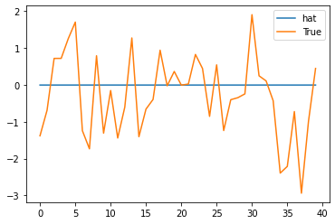
2) Fourier transform
w=np.zeros((159*N,159*N))for i in range(159*N):
for j in range(159*N):
if i==j :
w[i,j] = 0
elif np.abs(i-j) <= 1 :
w[i,j] = 1d = np.array(w.sum(axis=1))
D = np.diag(d)
L = np.array(np.diag(1/np.sqrt(d)) @ (D-w) @ np.diag(1/np.sqrt(d)))
lamb, Psi = np.linalg.eigh(L)
Lamb = np.diag(lamb)
fhatbar = Psi @ mean_fhat_fiveVTS.reshape(159*N,1)
power = fhatbar**2 3) Ebayes
plt.plot(fhatbar.reshape(159,5)[:,0]**2)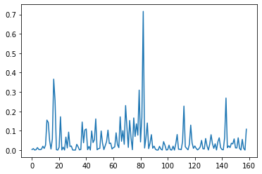
ebayesthresh = importr('EbayesThresh').ebayesthresh
power_threshed=np.array([np.array(ebayesthresh(FloatVector(fhatbar[i]**2))) for i in range(159*N)])
fhatbar_threshed = np.where(power_threshed>0,fhatbar,0)plt.plot(power_threshed.reshape(159,5)[:,0])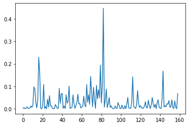
4) Inverse Fourier transform
fhatbarhat = Psi @ fhatbar_threshed
fhatbarhat_mean_spatio_temporal = fhatbarhat.reshape(159,N,1)5) ST-GCN
mean_spatio_temporal = torch.tensor(fhatbarhat_mean_spatio_temporal).reshape(159,5,1).float()mean_X_spatio_temporal = mean_spatio_temporal[:158,:,:]
mean_y_spatio_temporal = mean_spatio_temporal[1:,:,:]model = RecurrentGCN(node_features=1, filters=4)
optimizer = torch.optim.Adam(model.parameters(), lr=0.01)
model.train()
for epoch in tqdm(range(50)):
for time, (xt,yt) in enumerate(zip(mean_X_spatio_temporal,mean_y_spatio_temporal)):
y_hat = model(xt, edge_index, edge_attr)
cost = torch.mean((y_hat-yt)**2)
cost.backward()
optimizer.step()
optimizer.zero_grad()100%|██████████| 50/50 [00:26<00:00, 1.88it/s]mean_X_spatio_temporal_fore = mean_spatio_temporal[119:,:,:]mean_fhat_spatio_temporal = torch.stack([model(xt, edge_index, edge_attr) for xt in mean_X_spatio_temporal_fore]).detach().numpy()Box plot
sum((mean_fhat_spatio_temporal.reshape(40,5) - fiveVTS_test)**2)array([50.84345214, 43.46101387, 45.27811312, 37.2224609 , 83.27272505])plt.figure(figsize=(20, 8))
plt.boxplot((mean_fhat_spatio_temporal.reshape(40,5) - fiveVTS_test)){'whiskers': [<matplotlib.lines.Line2D at 0x7fe7189f0d00>,
<matplotlib.lines.Line2D at 0x7fe7189f0eb0>,
<matplotlib.lines.Line2D at 0x7fe718980fd0>,
<matplotlib.lines.Line2D at 0x7fe71898b310>,
<matplotlib.lines.Line2D at 0x7fe718999430>,
<matplotlib.lines.Line2D at 0x7fe718999700>,
<matplotlib.lines.Line2D at 0x7fe7189a7820>,
<matplotlib.lines.Line2D at 0x7fe7189a7af0>,
<matplotlib.lines.Line2D at 0x7fe7189b3c10>,
<matplotlib.lines.Line2D at 0x7fe7189b3ee0>],
'caps': [<matplotlib.lines.Line2D at 0x7fe7189801c0>,
<matplotlib.lines.Line2D at 0x7fe718980490>,
<matplotlib.lines.Line2D at 0x7fe71898b5e0>,
<matplotlib.lines.Line2D at 0x7fe71898b8b0>,
<matplotlib.lines.Line2D at 0x7fe7189999d0>,
<matplotlib.lines.Line2D at 0x7fe718999ca0>,
<matplotlib.lines.Line2D at 0x7fe7189a7dc0>,
<matplotlib.lines.Line2D at 0x7fe7189b30d0>,
<matplotlib.lines.Line2D at 0x7fe7189411f0>,
<matplotlib.lines.Line2D at 0x7fe7189414c0>],
'boxes': [<matplotlib.lines.Line2D at 0x7fe7189f0a30>,
<matplotlib.lines.Line2D at 0x7fe718980d00>,
<matplotlib.lines.Line2D at 0x7fe718999160>,
<matplotlib.lines.Line2D at 0x7fe7189a7550>,
<matplotlib.lines.Line2D at 0x7fe7189b3940>],
'medians': [<matplotlib.lines.Line2D at 0x7fe718980760>,
<matplotlib.lines.Line2D at 0x7fe71898bb80>,
<matplotlib.lines.Line2D at 0x7fe718999f70>,
<matplotlib.lines.Line2D at 0x7fe7189b33a0>,
<matplotlib.lines.Line2D at 0x7fe718941790>],
'fliers': [<matplotlib.lines.Line2D at 0x7fe718980a30>,
<matplotlib.lines.Line2D at 0x7fe71898be50>,
<matplotlib.lines.Line2D at 0x7fe7189a7280>,
<matplotlib.lines.Line2D at 0x7fe7189b3670>,
<matplotlib.lines.Line2D at 0x7fe718941a60>],
'means': []}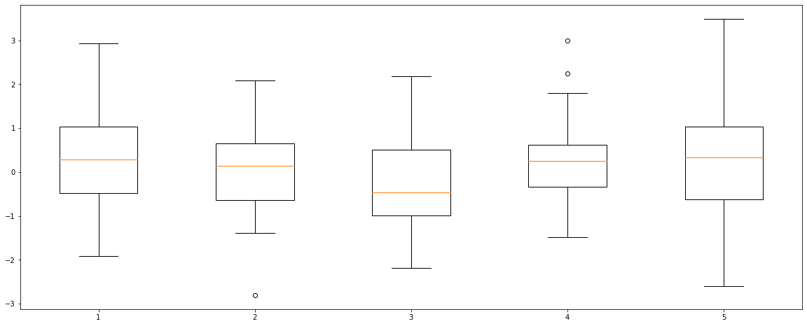
plt.figure(figsize=(20, 8))
plt.boxplot(((mean_fhat_spatio_temporal.reshape(40,5) - fiveVTS_test)).reshape(200,1)){'whiskers': [<matplotlib.lines.Line2D at 0x7fe71892c7c0>,
<matplotlib.lines.Line2D at 0x7fe71892ca90>],
'caps': [<matplotlib.lines.Line2D at 0x7fe71892cd60>,
<matplotlib.lines.Line2D at 0x7fe7188ba070>],
'boxes': [<matplotlib.lines.Line2D at 0x7fe71891f490>],
'medians': [<matplotlib.lines.Line2D at 0x7fe7188ba340>],
'fliers': [<matplotlib.lines.Line2D at 0x7fe7188ba640>],
'means': []}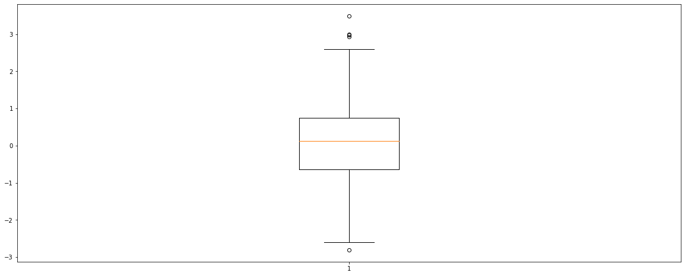
6) Fourier transform
mean_fhat_spatio_temporal = torch.stack([model(xt, edge_index, edge_attr) for xt in mean_spatio_temporal]).detach().numpy()w=np.zeros((159*N,159*N))for i in range(159*N):
for j in range(159*N):
if i==j :
w[i,j] = 0
elif np.abs(i-j) <= 1 :
w[i,j] = 1d = np.array(w.sum(axis=1))
D = np.diag(d)
L = np.array(np.diag(1/np.sqrt(d)) @ (D-w) @ np.diag(1/np.sqrt(d)))
lamb, Psi = np.linalg.eigh(L)
Lamb = np.diag(lamb)
fhatbar = Psi @ mean_fhat_spatio_temporal.reshape(159*N,1)
power = fhatbar**2 7) Ebayes
ebayesthresh = importr('EbayesThresh').ebayesthresh
power_threshed=np.array([np.array(ebayesthresh(FloatVector(fhatbar[i]**2))) for i in range(159*N)])
fhatbar_threshed = np.where(power_threshed>0,fhatbar,0)8) Inverse Fourier transform
fhatbarhat = Psi @ fhatbar_threshed
fhatbarhat_mean_spatio_temporal = fhatbarhat.reshape(159,N,1)9) ST-GCN
mean_spatio_temporal2 = torch.tensor(fhatbarhat_mean_spatio_temporal).reshape(159,5,1).float()mean_X_spatio_temporal2 = mean_spatio_temporal2[:158,:,:]
mean_y_spatio_temporal2 = mean_spatio_temporal2[1:,:,:]model = RecurrentGCN(node_features=1, filters=4)
optimizer = torch.optim.Adam(model.parameters(), lr=0.01)
model.train()
for epoch in tqdm(range(50)):
for time, (xt,yt) in enumerate(zip(mean_X_spatio_temporal2,mean_y_spatio_temporal2)):
y_hat = model(xt, edge_index, edge_attr)
cost = torch.mean((y_hat-yt)**2)
cost.backward()
optimizer.step()
optimizer.zero_grad()100%|██████████| 50/50 [00:26<00:00, 1.88it/s]mean_X_spatio_temporal_fore2 = mean_spatio_temporal2[119:,:,:]mean_fhat_spatio_temporal2 = torch.stack([model(xt, edge_index, edge_attr) for xt in mean_X_spatio_temporal_fore2]).detach().numpy()Box plot
sum((mean_fhat_spatio_temporal2.reshape(40,5) - fiveVTS_test)**2)array([51.0058129 , 43.43487353, 45.28961739, 37.21645084, 83.19356611])plt.figure(figsize=(20, 8))
plt.boxplot((mean_fhat_spatio_temporal2.reshape(40,5) - fiveVTS_test)){'whiskers': [<matplotlib.lines.Line2D at 0x7fe718ae91f0>,
<matplotlib.lines.Line2D at 0x7fe718ae94c0>,
<matplotlib.lines.Line2D at 0x7fe718af55e0>,
<matplotlib.lines.Line2D at 0x7fe718af58b0>,
<matplotlib.lines.Line2D at 0x7fe718a819d0>,
<matplotlib.lines.Line2D at 0x7fe718a81ca0>,
<matplotlib.lines.Line2D at 0x7fe718a8fdc0>,
<matplotlib.lines.Line2D at 0x7fe718a9d0d0>,
<matplotlib.lines.Line2D at 0x7fe718aa91f0>,
<matplotlib.lines.Line2D at 0x7fe718aa94c0>],
'caps': [<matplotlib.lines.Line2D at 0x7fe718ae9790>,
<matplotlib.lines.Line2D at 0x7fe718ae9a60>,
<matplotlib.lines.Line2D at 0x7fe718af5b80>,
<matplotlib.lines.Line2D at 0x7fe718af5e50>,
<matplotlib.lines.Line2D at 0x7fe718a81f70>,
<matplotlib.lines.Line2D at 0x7fe718a8f280>,
<matplotlib.lines.Line2D at 0x7fe718a9d3a0>,
<matplotlib.lines.Line2D at 0x7fe718a9d670>,
<matplotlib.lines.Line2D at 0x7fe718aa9790>,
<matplotlib.lines.Line2D at 0x7fe718aa9a60>],
'boxes': [<matplotlib.lines.Line2D at 0x7fe718adaee0>,
<matplotlib.lines.Line2D at 0x7fe718af5310>,
<matplotlib.lines.Line2D at 0x7fe718a81700>,
<matplotlib.lines.Line2D at 0x7fe718a8faf0>,
<matplotlib.lines.Line2D at 0x7fe718a9dee0>],
'medians': [<matplotlib.lines.Line2D at 0x7fe718ae9d30>,
<matplotlib.lines.Line2D at 0x7fe718a81160>,
<matplotlib.lines.Line2D at 0x7fe718a8f550>,
<matplotlib.lines.Line2D at 0x7fe718a9d940>,
<matplotlib.lines.Line2D at 0x7fe718aa9d30>],
'fliers': [<matplotlib.lines.Line2D at 0x7fe718af5040>,
<matplotlib.lines.Line2D at 0x7fe718a81430>,
<matplotlib.lines.Line2D at 0x7fe718a8f820>,
<matplotlib.lines.Line2D at 0x7fe718a9dc10>,
<matplotlib.lines.Line2D at 0x7fe718a37040>],
'means': []}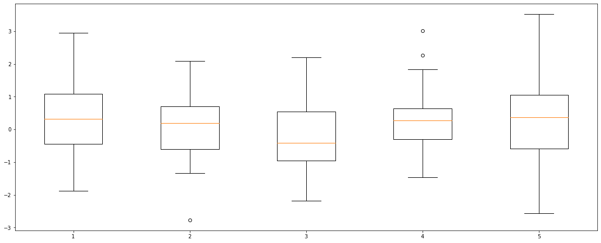
plt.figure(figsize=(20, 8))
plt.boxplot(((mean_fhat_spatio_temporal2.reshape(40,5) - fiveVTS_test)).reshape(200,1)){'whiskers': [<matplotlib.lines.Line2D at 0x7fe718a1a850>,
<matplotlib.lines.Line2D at 0x7fe718a1ab20>],
'caps': [<matplotlib.lines.Line2D at 0x7fe718a1adf0>,
<matplotlib.lines.Line2D at 0x7fe718a2a100>],
'boxes': [<matplotlib.lines.Line2D at 0x7fe718a0e400>],
'medians': [<matplotlib.lines.Line2D at 0x7fe718a2a3d0>],
'fliers': [<matplotlib.lines.Line2D at 0x7fe718a2a6a0>],
'means': []}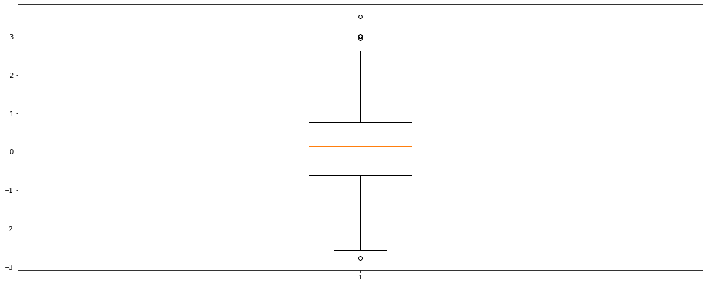
2. Linear Interpolation
_df = pd.DataFrame(fiveVTS_train)
_df.interpolate(method='linear', inplace=True)
_df = _df.fillna(0)linear_fiveVTS_train = np.array(_df).reshape(160,5)1) ST-GCN
linear_f_fiveVTS_train = torch.tensor(linear_fiveVTS_train).reshape(160,5,1).float()linear_X_fiveVTS = linear_f_fiveVTS_train[:159,:,:]
linear_y_fiveVTS = linear_f_fiveVTS_train[1:,:,:]model = RecurrentGCN(node_features=1, filters=4)
optimizer = torch.optim.Adam(model.parameters(), lr=0.01)
model.train()
for epoch in tqdm(range(50)):
for time, (xt,yt) in enumerate(zip(linear_X_fiveVTS,linear_y_fiveVTS)):
y_hat = model(xt, edge_index, edge_attr)
cost = torch.mean((y_hat-yt)**2)
cost.backward()
optimizer.step()
optimizer.zero_grad()100%|██████████| 50/50 [00:26<00:00, 1.87it/s]linear_fhat_fiveVTS = torch.stack([model(xt, edge_index, edge_attr) for xt in linear_X_fiveVTS]).detach().numpy()2) Fourier transform
w=np.zeros((159*N,159*N))for i in range(159*N):
for j in range(159*N):
if i==j :
w[i,j] = 0
elif np.abs(i-j) <= 1 :
w[i,j] = 1d = np.array(w.sum(axis=1))
D = np.diag(d)
L = np.array(np.diag(1/np.sqrt(d)) @ (D-w) @ np.diag(1/np.sqrt(d)))
lamb, Psi = np.linalg.eigh(L)
Lamb = np.diag(lamb)
fhatbar = Psi @ linear_fhat_fiveVTS.reshape(159*N,1)
power = fhatbar**2 3) Ebayes
ebayesthresh = importr('EbayesThresh').ebayesthresh
power_threshed=np.array([np.array(ebayesthresh(FloatVector(fhatbar[i]**2))) for i in range(159*N)])
fhatbar_threshed = np.where(power_threshed>0,fhatbar,0)4) Inverse Fourier transform
fhatbarhat = Psi @ fhatbar_threshed
fhatbarhat_linear_spatio_temporal = fhatbarhat.reshape(159,N,1)5) ST-GCN
linear_spatio_temporal = torch.tensor(fhatbarhat_linear_spatio_temporal).reshape(159,5,1).float()linear_X_spatio_temporal = linear_spatio_temporal[:158,:,:]
linear_y_spatio_temporal = linear_spatio_temporal[1:,:,:]model = RecurrentGCN(node_features=1, filters=4)
optimizer = torch.optim.Adam(model.parameters(), lr=0.01)
model.train()
for epoch in tqdm(range(50)):
for time, (xt,yt) in enumerate(zip(linear_X_spatio_temporal,linear_y_spatio_temporal)):
y_hat = model(xt, edge_index, edge_attr)
cost = torch.mean((y_hat-yt)**2)
cost.backward()
optimizer.step()
optimizer.zero_grad()100%|██████████| 50/50 [00:26<00:00, 1.89it/s]linear_X_spatio_temporal_fore = linear_spatio_temporal[119:,:,:]linear_fhat_spatio_temporal = torch.stack([model(xt, edge_index, edge_attr) for xt in linear_X_spatio_temporal_fore]).detach().numpy()Box plot
plt.figure(figsize=(20, 8))
plt.boxplot((linear_fhat_spatio_temporal.reshape(40,5) - fiveVTS_test)){'whiskers': [<matplotlib.lines.Line2D at 0x7fe7204fae20>,
<matplotlib.lines.Line2D at 0x7fe7204fcc70>,
<matplotlib.lines.Line2D at 0x7fe7204454c0>,
<matplotlib.lines.Line2D at 0x7fe720445790>,
<matplotlib.lines.Line2D at 0x7fe7204538b0>,
<matplotlib.lines.Line2D at 0x7fe720453b80>,
<matplotlib.lines.Line2D at 0x7fe7204ee460>,
<matplotlib.lines.Line2D at 0x7fe7204626d0>,
<matplotlib.lines.Line2D at 0x7fe7204747f0>,
<matplotlib.lines.Line2D at 0x7fe720474ac0>],
'caps': [<matplotlib.lines.Line2D at 0x7fe7204fc970>,
<matplotlib.lines.Line2D at 0x7fe7204fc520>,
<matplotlib.lines.Line2D at 0x7fe720445a60>,
<matplotlib.lines.Line2D at 0x7fe720445d30>,
<matplotlib.lines.Line2D at 0x7fe720453e50>,
<matplotlib.lines.Line2D at 0x7fe720462160>,
<matplotlib.lines.Line2D at 0x7fe7204629a0>,
<matplotlib.lines.Line2D at 0x7fe720462c70>,
<matplotlib.lines.Line2D at 0x7fe720474d90>,
<matplotlib.lines.Line2D at 0x7fe7204800a0>],
'boxes': [<matplotlib.lines.Line2D at 0x7fe7204fa070>,
<matplotlib.lines.Line2D at 0x7fe7204451f0>,
<matplotlib.lines.Line2D at 0x7fe7204535e0>,
<matplotlib.lines.Line2D at 0x7fe7204faa30>,
<matplotlib.lines.Line2D at 0x7fe720474520>],
'medians': [<matplotlib.lines.Line2D at 0x7fe7204fc220>,
<matplotlib.lines.Line2D at 0x7fe720453040>,
<matplotlib.lines.Line2D at 0x7fe720462430>,
<matplotlib.lines.Line2D at 0x7fe720462f40>,
<matplotlib.lines.Line2D at 0x7fe720480370>],
'fliers': [<matplotlib.lines.Line2D at 0x7fe7204fcfd0>,
<matplotlib.lines.Line2D at 0x7fe720453310>,
<matplotlib.lines.Line2D at 0x7fe7204fcbb0>,
<matplotlib.lines.Line2D at 0x7fe720474250>,
<matplotlib.lines.Line2D at 0x7fe720480640>],
'means': []}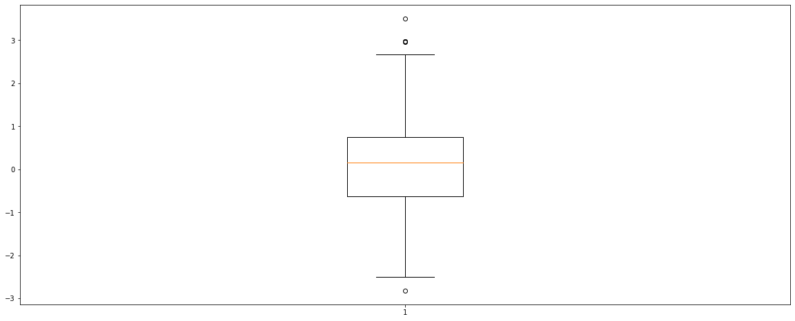
plt.figure(figsize=(20, 8))
plt.boxplot(((linear_fhat_spatio_temporal.reshape(40,5) - fiveVTS_test)).reshape(200,1)){'whiskers': [<matplotlib.lines.Line2D at 0x7fe7203f2070>,
<matplotlib.lines.Line2D at 0x7fe7203f2370>],
'caps': [<matplotlib.lines.Line2D at 0x7fe7203f2640>,
<matplotlib.lines.Line2D at 0x7fe7203f2910>],
'boxes': [<matplotlib.lines.Line2D at 0x7fe7203e4d60>],
'medians': [<matplotlib.lines.Line2D at 0x7fe7203f2be0>],
'fliers': [<matplotlib.lines.Line2D at 0x7fe7203f2eb0>],
'means': []}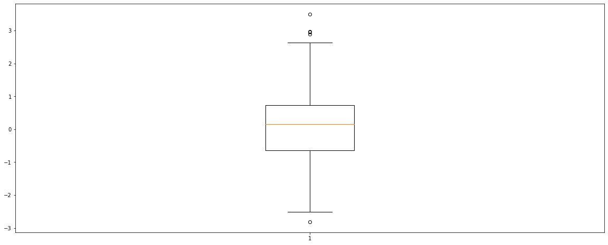
6) Fourier transform
linear_fhat_spatio_temporal = torch.stack([model(xt, edge_index, edge_attr) for xt in linear_spatio_temporal]).detach().numpy()w=np.zeros((159*N,159*N))for i in range(159*N):
for j in range(159*N):
if i==j :
w[i,j] = 0
elif np.abs(i-j) <= 1 :
w[i,j] = 1d = np.array(w.sum(axis=1))
D = np.diag(d)
L = np.array(np.diag(1/np.sqrt(d)) @ (D-w) @ np.diag(1/np.sqrt(d)))
lamb, Psi = np.linalg.eigh(L)
Lamb = np.diag(lamb)
fhatbar = Psi @ linear_fhat_fiveVTS.reshape(159*N,1)
power = fhatbar**2 7) Ebayes
ebayesthresh = importr('EbayesThresh').ebayesthresh
power_threshed=np.array([np.array(ebayesthresh(FloatVector(fhatbar[i]**2))) for i in range(159*N)])
fhatbar_threshed = np.where(power_threshed>0,fhatbar,0)8) Inverse Fourier transform
fhatbarhat = Psi @ fhatbar_threshed
fhatbarhat_linear_spatio_temporal = fhatbarhat.reshape(159,N,1)9) ST-GCN
linear_spatio_temporal2 = torch.tensor(fhatbarhat_linear_spatio_temporal).reshape(159,5,1).float()linear_X_spatio_temporal2 = linear_spatio_temporal2[:158,:,:]
linear_y_spatio_temporal2 = linear_spatio_temporal2[1:,:,:]model = RecurrentGCN(node_features=1, filters=4)
optimizer = torch.optim.Adam(model.parameters(), lr=0.01)
model.train()
for epoch in tqdm(range(50)):
for time, (xt,yt) in enumerate(zip(linear_X_spatio_temporal2,linear_y_spatio_temporal2)):
y_hat = model(xt, edge_index, edge_attr)
cost = torch.mean((y_hat-yt)**2)
cost.backward()
optimizer.step()
optimizer.zero_grad()100%|██████████| 50/50 [00:26<00:00, 1.87it/s]linear_X_spatio_temporal_fore2 = linear_spatio_temporal2[119:,:,:]linear_fhat_spatio_temporal2 = torch.stack([model(xt, edge_index, edge_attr) for xt in linear_X_spatio_temporal_fore2]).detach().numpy()Box plot
plt.figure(figsize=(20, 8))
plt.boxplot((linear_fhat_spatio_temporal2.reshape(40,5) - fiveVTS_test)){'whiskers': [<matplotlib.lines.Line2D at 0x7fe720379a60>,
<matplotlib.lines.Line2D at 0x7fe72036b490>,
<matplotlib.lines.Line2D at 0x7fe7202a6d30>,
<matplotlib.lines.Line2D at 0x7fe7202b1040>,
<matplotlib.lines.Line2D at 0x7fe7202be1c0>,
<matplotlib.lines.Line2D at 0x7fe7202be490>,
<matplotlib.lines.Line2D at 0x7fe7202cc5b0>,
<matplotlib.lines.Line2D at 0x7fe7202cc880>,
<matplotlib.lines.Line2D at 0x7fe7202d89a0>,
<matplotlib.lines.Line2D at 0x7fe7202d8c70>],
'caps': [<matplotlib.lines.Line2D at 0x7fe720379ee0>,
<matplotlib.lines.Line2D at 0x7fe7202a61f0>,
<matplotlib.lines.Line2D at 0x7fe7202b1340>,
<matplotlib.lines.Line2D at 0x7fe7202b1610>,
<matplotlib.lines.Line2D at 0x7fe7202be760>,
<matplotlib.lines.Line2D at 0x7fe7202bea30>,
<matplotlib.lines.Line2D at 0x7fe7202ccb50>,
<matplotlib.lines.Line2D at 0x7fe7202cce20>,
<matplotlib.lines.Line2D at 0x7fe7202d8f40>,
<matplotlib.lines.Line2D at 0x7fe720266250>],
'boxes': [<matplotlib.lines.Line2D at 0x7fe720379790>,
<matplotlib.lines.Line2D at 0x7fe7202a6a60>,
<matplotlib.lines.Line2D at 0x7fe7202b1eb0>,
<matplotlib.lines.Line2D at 0x7fe7202cc2e0>,
<matplotlib.lines.Line2D at 0x7fe7202d86d0>],
'medians': [<matplotlib.lines.Line2D at 0x7fe7202a64c0>,
<matplotlib.lines.Line2D at 0x7fe7202b1910>,
<matplotlib.lines.Line2D at 0x7fe7202bed00>,
<matplotlib.lines.Line2D at 0x7fe7202d8130>,
<matplotlib.lines.Line2D at 0x7fe720266520>],
'fliers': [<matplotlib.lines.Line2D at 0x7fe7202a6790>,
<matplotlib.lines.Line2D at 0x7fe7202b1be0>,
<matplotlib.lines.Line2D at 0x7fe7202befd0>,
<matplotlib.lines.Line2D at 0x7fe7202d8400>,
<matplotlib.lines.Line2D at 0x7fe7202667f0>],
'means': []}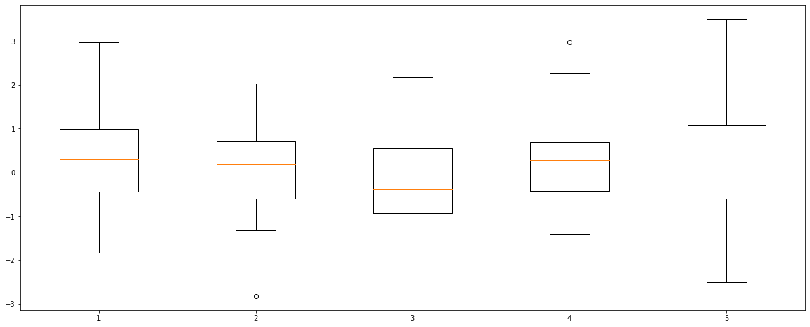
plt.figure(figsize=(20, 8))
plt.boxplot(((linear_fhat_spatio_temporal2.reshape(40,5) - fiveVTS_test)).reshape(200,1)){'whiskers': [<matplotlib.lines.Line2D at 0x7fe720254550>,
<matplotlib.lines.Line2D at 0x7fe720254820>],
'caps': [<matplotlib.lines.Line2D at 0x7fe720254af0>,
<matplotlib.lines.Line2D at 0x7fe720254df0>],
'boxes': [<matplotlib.lines.Line2D at 0x7fe7202543a0>],
'medians': [<matplotlib.lines.Line2D at 0x7fe7201e0100>],
'fliers': [<matplotlib.lines.Line2D at 0x7fe7201e03d0>],
'means': []}3. GNAR
mean
%R -i fiveVTS_train_mean%%R
meanprediction <- predict(GNARfit(vts = fiveVTS_train_mean[1:160,], net = fiveNet, alphaOrder = 2, betaOrder = c(1, 1)),n.ahead=40)%R -o meanpredictionsum((meanprediction.reshape(40,5)[1] - fiveVTS_test[1])**2)3.8828590908470577plt.figure(figsize=(20, 8))
plt.boxplot((meanprediction.reshape(40,5) - fiveVTS_test)){'whiskers': [<matplotlib.lines.Line2D at 0x7fe7201b9670>,
<matplotlib.lines.Line2D at 0x7fe7201b9940>,
<matplotlib.lines.Line2D at 0x7fe7201c8a60>,
<matplotlib.lines.Line2D at 0x7fe7201c8d30>,
<matplotlib.lines.Line2D at 0x7fe7201d6e50>,
<matplotlib.lines.Line2D at 0x7fe720163160>,
<matplotlib.lines.Line2D at 0x7fe72016a280>,
<matplotlib.lines.Line2D at 0x7fe72016a550>,
<matplotlib.lines.Line2D at 0x7fe72017c670>,
<matplotlib.lines.Line2D at 0x7fe72017c940>],
'caps': [<matplotlib.lines.Line2D at 0x7fe7201b9c10>,
<matplotlib.lines.Line2D at 0x7fe7201b9ee0>,
<matplotlib.lines.Line2D at 0x7fe7201d6040>,
<matplotlib.lines.Line2D at 0x7fe7201d6310>,
<matplotlib.lines.Line2D at 0x7fe720163430>,
<matplotlib.lines.Line2D at 0x7fe720163700>,
<matplotlib.lines.Line2D at 0x7fe72016a820>,
<matplotlib.lines.Line2D at 0x7fe72016aaf0>,
<matplotlib.lines.Line2D at 0x7fe72017cc10>,
<matplotlib.lines.Line2D at 0x7fe72017cee0>],
'boxes': [<matplotlib.lines.Line2D at 0x7fe7201b93a0>,
<matplotlib.lines.Line2D at 0x7fe7201c8790>,
<matplotlib.lines.Line2D at 0x7fe7201d6b80>,
<matplotlib.lines.Line2D at 0x7fe720163f70>,
<matplotlib.lines.Line2D at 0x7fe72017c3a0>],
'medians': [<matplotlib.lines.Line2D at 0x7fe7201c81f0>,
<matplotlib.lines.Line2D at 0x7fe7201d65e0>,
<matplotlib.lines.Line2D at 0x7fe7201639d0>,
<matplotlib.lines.Line2D at 0x7fe72016adc0>,
<matplotlib.lines.Line2D at 0x7fe72018a1f0>],
'fliers': [<matplotlib.lines.Line2D at 0x7fe7201c84c0>,
<matplotlib.lines.Line2D at 0x7fe7201d68b0>,
<matplotlib.lines.Line2D at 0x7fe720163ca0>,
<matplotlib.lines.Line2D at 0x7fe72017c0d0>,
<matplotlib.lines.Line2D at 0x7fe72018a4c0>],
'means': []}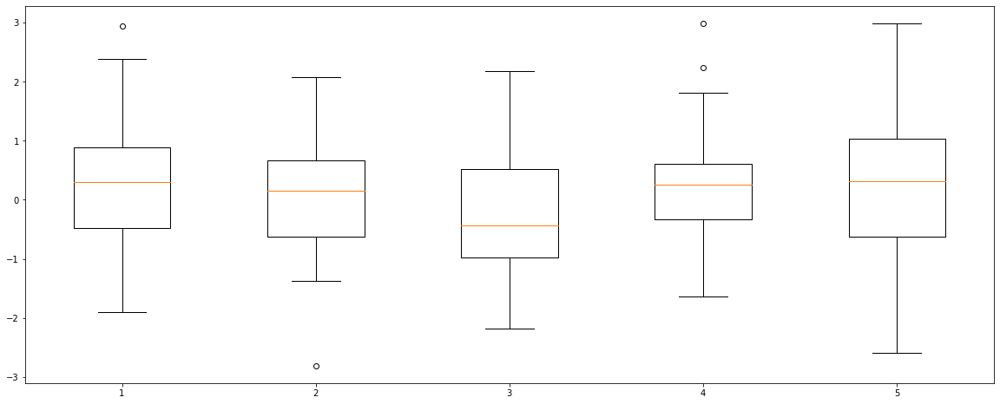
plt.figure(figsize=(20, 8))
plt.boxplot(((meanprediction.reshape(40,5) - fiveVTS_test)).reshape(200,1)){'whiskers': [<matplotlib.lines.Line2D at 0x7fe7200eebb0>,
<matplotlib.lines.Line2D at 0x7fe7200eee80>],
'caps': [<matplotlib.lines.Line2D at 0x7fe7200fc190>,
<matplotlib.lines.Line2D at 0x7fe7200fc460>],
'boxes': [<matplotlib.lines.Line2D at 0x7fe72015d700>],
'medians': [<matplotlib.lines.Line2D at 0x7fe7200fc730>],
'fliers': [<matplotlib.lines.Line2D at 0x7fe7200fca00>],
'means': []}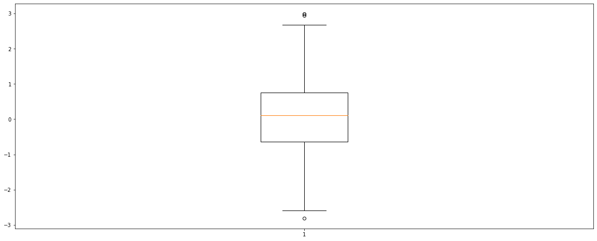